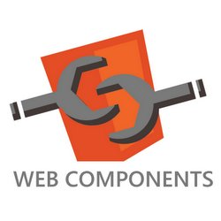

Web UI Package
Written by Sigmund Cherem
October 2012 (Updated February 2013)

The Web UI package (Web UI for short) provides web components, templates, data binding, and encapsulation, to help you write web applications at scale. Web UI is available as a pub package.
Many UI frameworks exist for writing web apps in JavaScript—for example Backbone.js, Ember.js, and AngularJS. Recently, the web community has been pushing to include some of the common ideas of these frameworks directly into the browser platform. As a result, browsers have added features like shadow DOM and web components, and other experimental and cool ideas have been proposed, such as model-driven views (MDV).
Web UI combines the ideas from web components and MDV, adapting them to work well with Dart. The package takes advantage of advanced browser features when possible, emulating missing features when necessary.
This article walks through some examples. For more details, check out our specification, the summary of features, and our installation instructions.
MDV templates in Dart
Most UI frameworks provide templates to specify views with a succinct declarative syntax. Web UI closely follows the MDV syntax, which is basically HTML with small extensions to enable the following features:
- One-way data binding: Embed data into your UI
- Two-way data binding: Keep data in sync with UI changes
- Conditionals: Selectively show parts of the UI
- Loops: Construct lists and tables by iterating over collections
- Event listeners: Easily attach code that reacts to UI events
We made some changes to ensure that using Dart with MDV feels natural, but otherwise all the concepts from MDV are available here. Let’s take a look at examples for each of these features.
One-way data binding
You can inject data in your template using {{expression}}. The
example below shows a simple hello world program where the value of the Dart
top-level variable dataValue is injected in the page automatically. The right
column shows the app generated from this code running in an iframe.
| Source code (see full source) | Try it out... | |
<html><body>
<div>Hello {{dataValue}}!</div>
<script type="application/dart">
String dataValue;
main() {
var today = new DateTime.now();
dataValue = 'world ${today.year}-${today.month}-${today.day}';
}
</script>
</body></html> |
The template expression above is a one-way data binding. It sets up automatic monitoring of the data, and ensures that the UI stays up-to-date when the data’s value changes.
Web UI implements this monitoring by using the watcher.dart library. You can directly invoke this library if necessary. For example, the following code invokes watchers.dispatch() to make a change visible to the UI.
| Source code (see full source) | Try it out... | |
<html><body>
<div>Hello counter: {{count}}</div>
<script type="application/dart">
import 'dart:html';
import 'dart:async';
import 'package:web_ui/watcher.dart' as watchers;
int count;
main() {
count = 0;
new Timer.periodic(const Duration(seconds: 1), (_) {
count++;
watchers.dispatch();
});
}
</script>
</body></html> |
Although every now and then it’s useful to access watchers directly, we don’t usually have to manually write these calls. In particular, Web UI tries to automatically make the dispatch call when using common features such as two-way binding and attaching event listeners.
Two-way data binding
Two-way data binding lets us define that we want a DOM element’s value
(typically an input box or a check box) to be kept in sync with the value of a
Dart variable. The following example creates a two-way binding between str and
input.value. We declare this binding by writing the attribute
bind-value="str".
| Source code (see full source) | Try it out... | |
<html><body>
<div>
Input:
<input type="text" bind-value="str" placeholder="type something here">
<div> Value: {{str}}</div>
<div> Length: {{str.length}}</div>
</div>
<script type="application/dart">
String str = '';
main() {}
</script>
</body></html> |
This is a simple example where Web UI automatically dispatches events for data-model changes. In particular, whenever you update the value of the text box, the string and its length will be updated in other parts of the UI.
Conditionals
Template conditionals allow you to selectively activate parts of the UI. Write
a conditional by wrapping a portion of the UI in a <template> tag and putting
the condition in an attribute that has the form instantiate="if expr". For
instance, the following example shows They match! only when both input boxes
have the same text:
| Source code (see full source) | Try it out... | |
<html><body>
<div>
<div> Input1: <input type="text" bind-value="str1"></div>
<div> Input2: <input type="text" bind-value="str2"></div>
<template instantiate="if str1 == str2">
<div>They match!</div>
</template>
</div>
<script type="application/dart">
String str1 = '';
String str2 = '';
main() {}
</script>
</body></html> |
It is also possible to use attributes to directly select elements you want to
show. Because <template> tags are not allowed within HTML tables, this feature
makes it possible to have conditional rows and cells. For instance, the
following example hides the columns of phone numbers when the checkbox is not
selected:
| Source code (see full source) | Try it out... | |
<html><body>
<input type="checkbox" bind-checked="show">Show phones<br>
<table><thead><tr>
<td>Last</td><td>First</td><td template instantiate="if show">Phone</td>
</tr></thead>
<tbody>
<tr>
<td>Bracha</td><td>Gilad</td>
<td template instantiate="if show">555-555-5555</td>
</tr><tr>
<td>Bak</td><td>Lars</td>
<td template instantiate="if show">222-222-2222</td>
</tr><tr>
<td>Ladd</td><td>Seth</td>
<td template instantiate="if show">111-222-3333</td>
</tr>
</tbody></table>
<script type="application/dart">
bool show = true;
main() {}
</script>
</body></html> |
Loops
Template loops allow iteration over Iterable Dart objects, such as Collections.
To create a loop that operates on each item in an Iterable object, use the iterate
attribute in a <template> tag. The following example shows a fun little app
that has search as you type. It uses two-way data binding to store the
query string, and then computes a filtered set of results, which it displays
using a looping construct.
| Source code (see full source) | Try it out... | |
<html><body>
<div>
<span>Search for something:</span>
<input type="text" bind-value="query">
<div>
<template instantiate='if noMatches'><span>No matches</span></template>
<template instantiate='if !noMatches'><span>Top results:</span></template>
</div>
<div><ul>
<template iterate='fruit in results'>
<li>{{fruit}}</li>
</template>
</ul></div>
</div>
<script type="application/dart">
String query = '';
List<String> fruits = const [ 'Apple', 'Apricot', 'Avocado',
'Banana', 'Blackberry', 'Blackcurrant', 'Blueberry',
'Currant', 'Cherry', 'Clementine', 'Date', 'Durian',
'Fig', 'Gooseberry', 'Grape', 'Grapefruit', 'Guava',
'Huckleberry', 'Kiwi', 'Lemon', 'Lime', 'Lychee',
'Mandarine', 'Mango', 'Cantaloupe', 'Honeydew melon',
'Nectarine', 'Orange', 'Peach', 'Pear', 'Plum',
'Pineapple', 'Pomegranate', 'Raspberry', 'Redcurrant',
'Star fruit', 'Strawberry', 'Tangerine', 'Tomato',
'Watermelon'];
List<String> get results {
var lQuery = query.toLowerCase();
var res = fruits.where((v) => v.toLowerCase().contains(lQuery));
return (res.length <= 20) ? res.toList()
: (res.take(20).toList()..add('... and many more'));
}
bool get noMatches => results.isEmpty;
main() {}
</script>
</body></html> |
Just like we showed with conditionals, you can also express loops using
attributes on any element. Because <template> tags are not allowed within
HTML tables, this is the only way to use loops for table rows and cells. For
instance, this example creates a 3x3 table like in tic-tac-toe:
| Source code (see full source) | Try it out... | |
<html><body>
<table>
<tbody template iterate='row in table'>
<tr template iterate='cell in row'>
<td>{{cell}}</td>
</tr>
</tbody>
</table>
<script type="application/dart">
var table = [['X', 'O', '_'], ['O', 'X', '_'], ['_', '_', 'X']];
main() {}
</script>
</body></html> |
Event listeners
Templates provide a succinct way to listen for arbitrary UI events and
associate those events with Dart code: on-event... attributes. Here is an
example that listens for click events:
| Source code (see full source) | Try it out... | |
<html><body>
<div>
<button on-click="increment()">Click me</button>
<span>(click count: {{count}})</span>
</div>
<script type="application/dart">
int count = 0;
void increment(e) { count++; }
main() {}
</script>
</body></html> |
Summary of templates
Templates solve one part of the problem in building web applications: reducing the amount of boilerplate code needed to set up a typical model-view-viewmodel architecture. One-way data binding, two-way data binding, and event listeners help reduce the need for manually creating controller objects that do these bindings by hand. By combining bindings, conditionals, and loops, you can create simple and sophisticated views in a declarative fashion.
However, templating alone is not enough. We need mechanisms to encapsulate and abstract views so we can scale to build larger web apps. This is were we need web components.
Web components in Dart
Web components provide a way to create encapsulated reusable views, which are useful for building medium and large applications. A web component includes a view, some data, and behavior. In Web UI, views are described in terms of templates, while data and behavior are written directly in Dart.
Declaring a component
Web components are declared using a special <element> tag. For example, we can
take the click-count example above and make it a component as follows:
<html><body>
<element name="x-click-counter" constructor="CounterComponent" extends="div">
<template>
<button on-click="increment()">Click me</button>
<span>(click count: {{count}})</span>
</template>
<script type="application/dart">
import 'package:web_ui/web_ui.dart';
class CounterComponent extends WebComponent {
int count = 0;
void increment(e) { count++; }
}
</script>
</element>
<!-- more below... -->
</body></html>
The <element> tag defines a component whose visual appearance is declared under
the child <template> tag, and whose behavior code is embedded or sourced by
the child <script> tag.
Components can be thought of as extending HTML elements. The extends
attribute of <element> indicates which HTML element the component extends
(for example, “div”).
The constructor attribute indicates the class
that defines this component’s behavior
(for example, “CounterComponent”). Today, this
class must be a subclass of WebComponent,
but in the future it will be possible to
use a subclass of the HTML element declared in the extends
attribute. In the preceding example, that would mean
class CounterComponent extends DivElement ....
The <element> tag declares the component’s name with the name
attribute. Later, this name is used to instantiate the component.
Instantiating a component
Instantiating a component can be done in two ways: by using its name as a tag
(for example, <x-click-counter></x-click-counter>) or by setting the is
attribute on the tag that the component extends from, as in the following
example. Note that using an end tag </x-click-counter> is required.
| Source code (see full source) | Try it out... | |
<html><body>
<!-- ... element declared as above -->
<div is="x-click-counter"></div>
<script type="application/dart">
main(){}
</script>
</body></html> |
Passing data to a component
All of the public fields in a component declaration can be initialized directly
when we instantiate a component. We can do this by binding to an attribute name
that matches the hyphened-spelling of the field name. For instance, the
following example instantiates two click-counter components (declared just like
above), but initializes the count field of the component to a different value
each time.
| Source code (see full source) | Try it out... | |
<html><body>
<!-- ... element declared as above -->
<div is="x-click-counter" count="{{myNumber}}"></div>
<div is="x-click-counter" count="{{5}}"></div>
<script type="application/dart">
int myNumber = 12;
main(){}
</script>
</body></html> |
Passing child nodes to a component
Web components support composition. Using a special <content> tag, a
component can distribute child nodes provided when instantiating it. For
instance, the following component wraps it’s child nodes in a red frame:
| Source code (see full source) | Try it out... | |
<html><body>
<element name="x-redbox" constructor="RedBox" extends="div">
<template>
<div style='border: solid 2px red; text-align:center;'>
<content></content>
</div>
</template>
</element>
<x-redbox>
<span>hi</span>
</x-redbox>
<script type="application/dart">main(){}</script>
</body></html> |
You can also use CSS selectors to control how child nodes are distributed. See the full specification for more details.
Importing a component
When developing larger web applications, it is really useful to be able to split the work and divide pieces of your application in multiple files. It is also useful to create reusable components that you embed in several places of your application or even across several applications.
Web components allows us to import other components using <link
rel="import"> tags. For example, suppose we created a file
clickcounter.html that contains the declaration of the click-counter component
as we had above. Then the preceding example could be rewritten as follows:
<html>
<head>
<link rel="import" href="clickcounter.html">
</head>
<body>
<div is="x-click-counter" count="{{myNumber}}"></div>
<div is="x-click-counter" count="{{5}}"></div>
<script type="application/dart">
int myNumber = 12;
main(){}
</script>
</body>
</html>
Tools for using Web UI
Several tools will help you create and deploy projects that use Web UI. A compiler tool can be run offline to generate efficient code for your components and templates. The generated code will try to use the native features available in browsers, but otherwise it will resort to other techniques to ensure that the program semantics are the same everywhere.
Both Dartium and Dart Editor will have support for Web UI, providing you with a smooth edit/refresh cycle. In Dart Editor, changes to HTML and Dart source files can be compiled automatically in the background. An extension for Dartium will compile components on the fly as you load them.
For more details about these tools, see Tools for Web UI.
More information
There are many resources to explore and learn more about Web UI. Read the summary of features and the full specification. Check out our two Dartisans episodes on this topic:
You can also follow the project in GitHub, track and file bugs in our issue tracker, and play with other examples in our repo, such as our port of TodoMVC. Please note that we recently changed the name of this package from Dart web components to Web UI.
If you have any questions, you can ask them at Stack Overflow or contact us on the Web UI discussion group (web-ui AT dartlang.org).